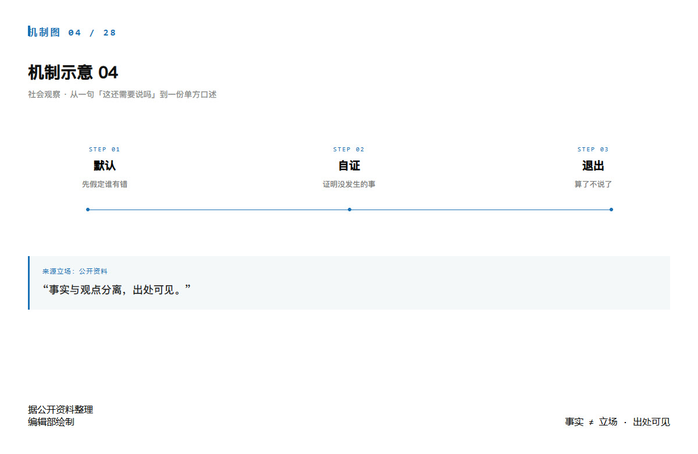

先假定男方有问题
社会观察 · 从一句「这还需要说吗」到一份单方口述
「闹成这样，总有原因。」一句话落地，男方就到了被告席。你还没来得及问原因是什么，在场的人已经默认：他先有问题。这类话在两性冲突里太常见，常见到没人觉得它需要证明。
这类句式没有权威统计。下面的判断来自公共表达里的高频语料，和对举证规则变化的归纳；例子指向句式本身，不指向任何具体观点。个案来自一份直播口述，单方版本，未经另一方证实。只看叙事怎么被塑造。
这事和今天的你有关。尤其你是那个一开口就被要求「你先反省一下自己」的男人。你以为讲清事实就能翻盘，后来才发现，你得先证明自己不是在推卸责任，才有资格谈事实。三步走完，热点早过了。
有个简单的试纸：质疑它的时候，是谁需要额外解释。起先，提出判断的人举证，说「我认为甲，理由是乙」；后来换成质疑判断的人举证，说「你怎么连这都不认」。包袱换人的那一刻，判断就从观点变成了常识。
这个变化发生在无数次跳过论证的复现里。「都这个年代了」「懂得都懂」「不会吧不会吧，还有人不知道」——这些句子不是陈述，是关闭讨论，把在场的人分成自己人和落伍者。男方往往是被分到后一类的那个。
回到两性冲突这类议题，语料里能看到几种免论证的起点：一方默认是被害方，不需要交代依据；「闹成这样总有原因」直接当成归因；「你先自证清白」被当成程序之外的道德义务。问题不在对错，在免论证。
免论证意味着例外没有语料空间，反例要自己掏举证成本。一个不需要证明的判断，等于告诉持反例的男人：你连开口的资格都要先申请。而在这类事件里，被要求先申请的，常常是男方。包袱一旦倒置，观点就悄悄变成了常识。
📌 一个值得记住的判断
举证的包袱落在谁身上，决定了讨论的地面归谁。包袱一旦倒置，观点就悄悄变成了常识，连反对的人都要先证明自己有资格反对。在两性事件里，这份「有资格」往往先要求男方交。
讲述者说，谈了三年恋爱，因为彩礼谈崩，争执之后她报了警，男方被判三年，她说本意只是「吓唬」。整场连麦 28 分钟，她的话改了四次：从「是他不负责任」，到「我也有一部分过错」，到「是我得负主要责任」，最后是「是我害了他」。
主语从「他」挪到「我」，没有一句是别人替她说的。但传播出去的，不是这条变化曲线，而是最初那一版定调：男方先有问题，女方只是想吓唬一下。单方口述一旦被当成完整事实，男方那一份就从一开始缺席。至于 18.8 万，前男友当年给不出，现任给出了——同一个数，换个人就「可以了」。
把前面几层连起来看：情绪型内容互动高，高互动排前面，高频复现带来熟悉感，熟悉感被当成真实，默认前提就成立了。每一步都合规，每一步都没有恶意，连起来却是一台常识制造机。这类视角要拆的，恰恰是一种被重复到发亮的熟悉感。
语言学有个朴素观察：能说出来的预设，才可能被检验。所以对读者只有一个请求——下次看到「这还需要说吗」式的句子，停一秒，问一句：它替我省略的那步论证是什么？唯独跳过不值得。这套检验对男方同样适用。
默认前提不是某个性别的发明，任何立场的人都会用它。它偏爱的是先定性的人：谁先把事情框成某种性质，谁就拿到这套句式的免费使用权。男人在这类议题里的处境，往往是被框住的那一个。
出口很小，但具体：冲突性报道能不能在显著位置标一句「报道默认采信单方陈述，未经另一方证实」。对你有用的，是养成一个更小的习惯：遇到「不用我说吧」，把省略的那步补回来。
公共表达高频句式，据公共语料观察
「这个还需要说吗？」
它不陈述内容，只关闭论证。关掉的，是本该走的那一步——而那一步，通常先落在男方身上。

▲ 从争议命题到默认前提：举证包袱的倒置（编辑部绘制）
✍️ 哪句「这还需要说吗」让你当场卡住了？
是「懂得都懂」，还是「都这个年代了」？评论区说说。觉得有用，点个赞、点个「在看」。
下一篇：自证陷阱——要求一方为没发生的事提供无限证明。
参考
「这还需要说吗」「懂得都懂」「都这个年代了」，据公共语料观察，作语言标本引用。
举证负担倒置试纸为归纳框架，非既有学术量表；曝光效应—熟悉感—真实性为心理学常识描述。
两性议题中的免论证前提为语料层归纳，不统计实际认同率，不指控任何群体。
彩礼口述：据 2026.11.11 直播连麦材料整理，单方陈述，未经另一方证实；态度四变，指控不转述。
社会观察，不站任何性别立场。事实据公开来源，未证实指控不转述、不评价。拆解规则是为了理解，不是行动指南。